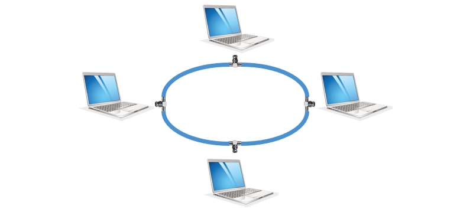
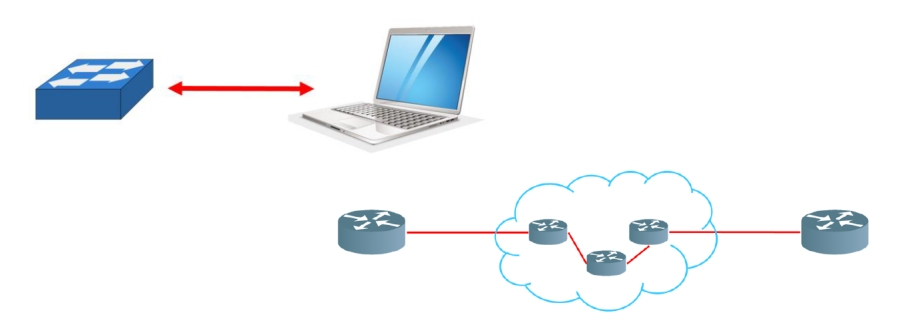
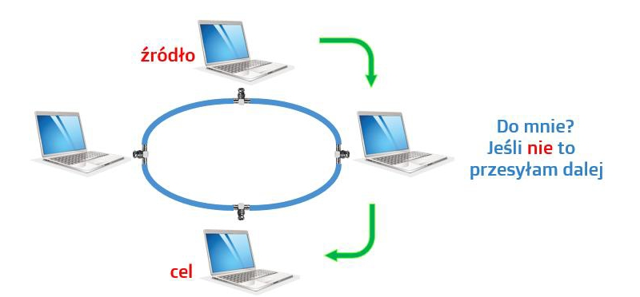
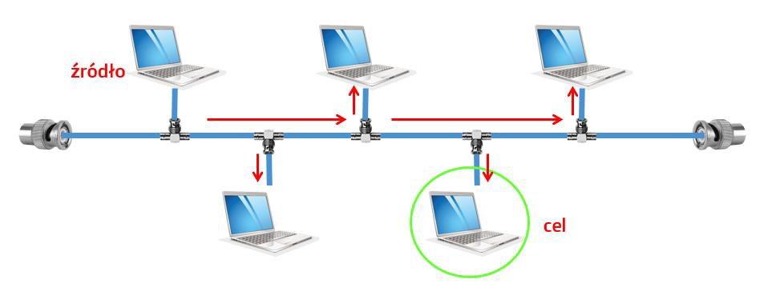

Topologia sieci
Topologię sieci dzielimy na fizyczną, która określa, w jaki sposób urządzenia są ze
sobą połączone oraz logiczną opisującą, w jaki sposób przesyłane są dane pomiędzy
urządzeniami. Każda, nawet najmniejsza sieć komputerowa, posiada topologię fizyczną
oraz logiczną, które to definiują sposób połączenia urządzeń oraz to, w jaki sposób przesyłane są dane.
Topologia fizyczna to topologia podstawowa, które stanowi podstawę do budowania topologii w dużych sieciach. Jest ona widoczne gołym okiem
i poszczególne rodzaje topologii fizycznej oznaczają sposób ustawienia urządzeń i mediów
Jedne z rodzajów topologi fizycznej to:
- Topologia magistrali - Topologia magistrali charakteryzuje się tym, że wszystkie urządzenia podłącza się do wspólnego medium transmisyjnego. Powszechnie stosowanym w tej topologii medium transmisyjnym był kabel koncentryczny. Jedną z wad tej topologii, była niewielką przepustowość (maksymalnie do 10 Mb/s).

- Topologia pierścienia - W topologii pierścienia każde urządzenie podłączone jest z dwoma sąsiadami, tworząc zamknięty krąg. Podobnie jak w przypadku topologii magistrali, przy budowie nie stosuję się dużej ilości okablowania oraz dodatkowych urządzeń.

- Topologia gwiazdy - W topologii gwiazdy urządzenia podłączone są do centralnego punktu, stanowiącego punkt dostępu do sieci. Dawniej punkt ten stanowiły koncentratory (ang. hub), obecnie natomiast stosuje się przełączniki (ang. switch). W lokalnych sieciach jest to najczęściej spotykana topologia, ponieważ jest prosta w zaprojektowaniu, budowie oraz rozbudowie, odporna na awarie i łatwo zarządzalna.

Topologia logiczna to topologia której nie widać gołym okiem i widoczna jest cyfrowo, jako sposób i kolejność komunikacji między urządzeniami
Jedne z rodzajów topologi fizycznej to:
- Topologia punkt-punkt - W topologii typu punkt-punkt dane przesyłane są tylko od jednego urządzenia do drugiego. Urządzenia te mogą być podłączone ze sobą bezpośrednio, np. komputer z przełącznikiem, jak również pośrednio, na duże odległości, z wykorzystaniem urządzeń pośredniczących, czego przykładem może być połączenie ze sobą dwóch ruterów oddalonych od siebie o wiele kilometrów.

- Topologia przekazywania żetonu - W topologii przekazywania żetonu, dane przekazywane są kolejno do urządzeń połączonych w sieć. Urządzenie, które otrzyma porcję danych, analizuje czy są one kierowane do niego czy też nie. Jeśli dane nie są do niego adresowane, przekazuje je dalej, do sąsiedniego urządzenia. W taki sposób, dane przesyłane są przez wszystkie urządzenia występujące pomiędzy urządzeniem źródłowym, a docelowym.

- Topologia wielodostępowa - Topologia wielodostępowa (czasami zwana również logiczną topologią rozgłaszania lub magistrali) umożliwia komunikację urządzeń w sieci poprzez jedno fizyczne medium transmisyjne. Najczęściej stosowana była wspólnie z fizyczną topologią magistrali oraz gwiazdy na wczesnym etapie jej rozwoju, kiedy to stosowano jeszcze koncentratory jako punkty dostępowe do sieci.

Źródło